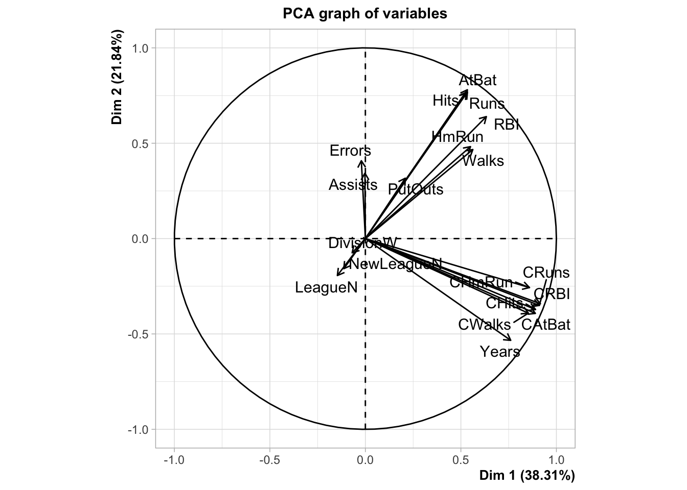
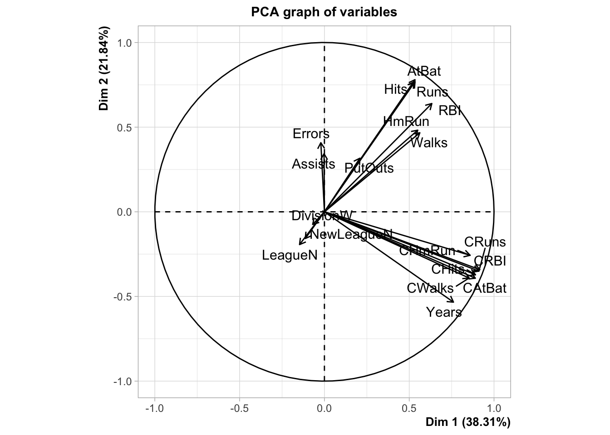

Chapitre 2 Régression sur composantes
2.1 Régression sur composantes principales (méthodo)
On considère le jeu de données Hitters dans lequel où on souhaite expliquer la variable Salary par les autres variables du jeu de données. On supprime les individus qui possèdent des données manquantes.
Parmi les variables explicatives, certaines sont qualitatives. Expliquer comment, à l’aide de la fonction model.matrix on peut utiliser ces variables dans un modèle linéaire. On appellera X la matrice des variables explicatives construites avec cette variable.
Comme pour le modèle linéaire, on utilise des contraintes identifiantes. Cela revient à prendre une modalité de référence et à coder les autres modalités par 0-1.
Calculer la matrice Xcr qui correspond à la matrice X centrée réduite. On pourra utiliser la fonction
scale.A l’aide de la fonction
PCAdu package FactoMineR, effectuer l’ACP du tableau Xcr avec l’optionscale.unit=FALSE.On utilise ici
scale.unit=FALSEcar les données sont déjà centrées-réduites. Ca nous permet de contrôler cette étape. 
Récupérer les coordonnées des individus sur les 5 premiers axes de l’ACP (variables \(Z\) dans le cours).
Effectuer la régression linéaire sur les 5 premières composantes principales et calculer les estimateurs des MCO (\(\widehat\theta_k,k=1,\dots,5\) dans le cours).
> donnees <- cbind.data.frame(Z,Salary=Hitters$Salary) > mod <- lm(Salary~.,data=donnees) > theta <- coef(mod) > theta ## (Intercept) Dim.1 Dim.2 Dim.3 Dim.4 Dim.5 ## 535.92588 106.57139 21.64469 24.34057 37.05637 -58.52540Remarque : on peut aussi tout faire “à la main” (sans utiliser PCA)
En déduire les estimateurs dans l’espace des données initiales pour les données centrées réduites, puis pour les données brutes. On pourra récupérer les vecteurs propres de l’ACP (\(u_k\) dans le cours) dans la sortie svd de la fonction PCA
-
Pour les données centrées-réduites, les coefficients s’obtiennent avec les formules vues en cours
\[\widehat\beta_0=\bar y\quad\text{et}\quad \widehat\beta_j=\widehat{\theta}^\prime v_j.\]
> U <- acp.hit$svd$V > V <- t(U) > beta0.cr <- mean(Hitters$Salary) > beta.cr <- as.vector(theta[2:6])%*%V > beta.cr ## [,1] [,2] [,3] [,4] [,5] [,6] [,7] [,8] ## [1,] 28.76604 30.44702 25.8445 33.00088 33.81997 35.08779 22.35103 29.01477 ## [,9] [,10] [,11] [,12] [,13] [,14] [,15] [,16] ## [1,] 29.78584 30.00201 32.06912 31.11231 31.48735 19.439 -63.20387 17.36044 ## [,17] [,18] [,19] ## [1,] -5.523264 -6.044002 21.74267-
Pour les données brutes, on utilise les formules :
\[\widehat\beta_0=\bar y-\sum_{j=1}^p\widehat\theta^\prime v_j\frac{\bar x_j}{\sigma_{x_j}}\quad\text{et}\quad\widehat\beta_j=\frac{\widehat\theta^\prime v_j}{\sigma_{X_j}},j=1,\dots,p.\]
> beta0 <- beta0.cr-sum(beta.cr*Xbar/stdX) > beta <- beta.cr/stdX > beta0 ## [1] -58.32022 > beta ## [,1] [,2] [,3] [,4] [,5] [,6] [,7] [,8] ## [1,] 0.1952793 0.6747214 2.95126 1.292134 1.306662 1.615605 4.662667 0.01268914 ## [,9] [,10] [,11] [,12] [,13] [,14] [,15] ## [1,] 0.04595165 0.3649987 0.09682748 0.09621344 0.119245 38.86728 -126.19 ## [,16] [,17] [,18] [,19] ## [1,] 0.06201606 -0.03807032 -0.9148466 43.51629-
Retrouver les estimateurs dans l’espace des données initiales pour les données centrées réduites à l’aide de la fonction
pcrdu package pls.> library(pls) > pcr.fit <- pcr(Salary~.,data=Hitters,scale=TRUE,ncomp=19) > coefficients(pcr.fit,ncomp=5) ## , , 5 comps ## ## Salary ## AtBat 28.766042 ## Hits 30.447021 ## HmRun 25.844498 ## Runs 33.000876 ## RBI 33.819966 ## Walks 35.087794 ## Years 22.351033 ## CAtBat 29.014768 ## CHits 29.785842 ## CHmRun 30.002014 ## CRuns 32.069124 ## CRBI 31.112315 ## CWalks 31.487349 ## LeagueN 19.438996 ## DivisionW -63.203872 ## PutOuts 17.360440 ## Assists -5.523264 ## Errors -6.044002 ## NewLeagueN 21.742668On considère les individus suivants
Calculer de 3 façons différentes les valeurs de salaire prédites par la régression sur 5 composantes principales.
-
Approche classique : on utilise
predict.pcr:
> predict(pcr.fit,newdata=df.new,ncomp=5) ## , , 5 comps ## ## Salary ## -Alan Ashby 495.0068 ## -Hubie Brooks 577.9581 ## -George Bell 822.0296-
On considère les valeurs centrées réduites et on utilise :
\[\widehat y=\bar y+ \widehat\theta^\prime v_1\tilde x_1+\cdots+\widehat\theta^\prime v_p\tilde x_p\]
> t(as.matrix(coefficients(pcr.fit,ncomp=5))) %*% + t(as.matrix(Xcr[c(1,100,80),]))+mean(Hitters$Salary) ## -Alan Ashby -Hubie Brooks -George Bell ## [1,] 495.0068 577.9581 822.0296 > #ou > beta0.cr+beta.cr%*%t(as.matrix(Xcr[c(1,100,80),])) ## -Alan Ashby -Hubie Brooks -George Bell ## [1,] 495.0068 577.9581 822.0296-
On considère les données brutes et on utilise :
\[\widehat y=\widehat\beta_0+\widehat\beta_1x_1+\cdots+\widehat\beta_px_p\]
-
2.2 Régression PLS : méthodo
On considère les mêmes données que précédemment.
A l’aide du vecteur \(Y\) (Salary) et de la matrice des \(X\) centrées réduites calculées dans l’exercice précédent, calculer la première composante PLS \(Z_1\).
> Y <- as.vector(Hitters$Salary) > w1 <- t(Xcr)%*%Y > w1 ## [,1] ## AtBat 46659.1995 ## Hits 51848.3247 ## HmRun 40543.5500 ## Runs 49624.3823 ## RBI 53122.7240 ## Walks 52462.0450 ## Years 47354.8899 ## CAtBat 62185.5603 ## CHits 64877.3193 ## CHmRun 62043.1671 ## CRuns 66504.6198 ## CRBI 67011.4288 ## CWalks 57893.5821 ## LeagueN -1688.0134 ## DivisionW -22753.8726 ## PutOuts 35514.7030 ## Assists 3006.3756 ## Errors -638.3256 ## NewLeagueN -335.0136 > Z1 <- Xcr%*%w1En déduire le coefficient associé à cette première composante en considérant le modèle \[Y=\alpha_1 Z_1+\varepsilon.\]
En déduire les coefficients en fonction des variables initiales (centrées réduites) de la régression PLS à une composante \[Y=\beta_0+\beta_1X_1+\dots+\beta_pX_p+\varepsilon.\]
> alpha1*w1 ## [,1] ## AtBat 25.0420570 ## Hits 27.8270677 ## HmRun 21.7597795 ## Runs 26.6334747 ## RBI 28.5110396 ## Walks 28.1564522 ## Years 25.4154350 ## CAtBat 33.3750764 ## CHits 34.8197471 ## CHmRun 33.2986538 ## CRuns 35.6931216 ## CRBI 35.9651267 ## CWalks 31.0715657 ## LeagueN -0.9059591 ## DivisionW -12.2120349 ## PutOuts 19.0607903 ## Assists 1.6135259 ## Errors -0.3425902 ## NewLeagueN -0.1798022Retrouver ces coefficients en utilisant la fonction
plsr.> pls.fit <- plsr(Salary~.,data=Hitters,scale=TRUE) > coefficients(pls.fit,ncomp = 1) ## , , 1 comps ## ## Salary ## AtBat 25.0420570 ## Hits 27.8270677 ## HmRun 21.7597795 ## Runs 26.6334747 ## RBI 28.5110396 ## Walks 28.1564522 ## Years 25.4154350 ## CAtBat 33.3750764 ## CHits 34.8197471 ## CHmRun 33.2986538 ## CRuns 35.6931216 ## CRBI 35.9651267 ## CWalks 31.0715657 ## LeagueN -0.9059591 ## DivisionW -12.2120349 ## PutOuts 19.0607903 ## Assists 1.6135259 ## Errors -0.3425902 ## NewLeagueN -0.1798022
2.3 Comparaison : PCR vs PLS.
Séparer le jeu de données en un échantillon d’apprentissage de taille 200 et un échantillon test de taille 63.
Avec les données d’apprentissage uniquement construire les régressions PCR et PLS. On choisira les nombres de composantes par validation croisée.
Comparer les deux méthodes en utilisant l’échantillon de validation. On pourra également utiliser un modèle linéaire classique.
Comparer ces méthodes en faisant une validation croisée 10 blocs.
On définit d’abord les 10 blocs pour la validation croisée.
> set.seed(1234) > bloc <- sample(1:10,nrow(Hitters),replace=TRUE) > table(bloc) ## bloc ## 1 2 3 4 5 6 7 8 9 10 ## 19 22 31 29 28 39 19 26 25 25> set.seed(4321) > prev <- data.frame(matrix(0,nrow=nrow(Hitters),ncol=3)) > names(prev) <- c("lin","PCR","PLS") > for (k in 1:10){ + # print(k) + ind.test <- bloc==k + dapp <- Hitters[!ind.test,] + dtest <- Hitters[ind.test,] + choix.pcr <- pcr(Salary~.,data=dapp,validation="CV") + ncomp.pcr <- which.min(choix.pcr$validation$PRESS) + choix.pls <- plsr(Salary~.,data=dapp,validation="CV") + ncomp.pls <- which.min(choix.pls$validation$PRESS) + mod.lin <- lm(Salary~.,data=dapp) + prev[ind.test,] <- data.frame( + lin=predict(mod.lin,newdata=dtest), + PCR=as.vector(predict(choix.pcr,newdata = dtest,ncomp=ncomp.pcr)), + PLS=as.vector(predict(choix.pls,newdata = dtest,ncomp=ncomp.pls))) + }> prev %>% mutate(obs=Hitters$Salary) %>% summarize_at(1:3,~(mean((.-obs)^2))) %>% sqrt() ## lin PCR PLS ## 1 340.0631 343.8019 350.6712On compare à un modèle qui prédit toujours la moyenne :
On peut retenter l’analyse en considérant toutes les interactions d’ordre 2 :
> set.seed(54321) > prev1 <- data.frame(matrix(0,nrow=nrow(Hitters),ncol=3)) > names(prev1) <- c("lin","PCR","PLS") > for (k in 1:10){ + # print(k) + ind.test <- bloc==k + dapp <- Hitters[!ind.test,] + dtest <- Hitters[ind.test,] + choix.pcr <- pcr(Salary~.^2,data=dapp,validation="CV") + ncomp.pcr <- which.min(choix.pcr$validation$PRESS) + choix.pls <- plsr(Salary~.^2,data=dapp,validation="CV") + ncomp.pls <- which.min(choix.pls$validation$PRESS) + mod.lin <- lm(Salary~.^2,data=dapp) + prev1[ind.test,] <- data.frame( + lin=predict(mod.lin,newdata=dtest), + PCR=as.vector(predict(choix.pcr,newdata = dtest,ncomp=ncomp.pcr)), + PLS=as.vector(predict(choix.pls,newdata = dtest,ncomp=ncomp.pls))) + }On obtient les performances suivantes :
> prev1 %>% mutate(obs=Hitters$Salary) %>% summarize_at(1:3,~(mean((.-obs)^2))) %>% sqrt() ## lin PCR PLS ## 1 1494.847 330.0474 349.1116On mesure bien l’intérêt de réduire la dimension dans ce nouveau contexte.